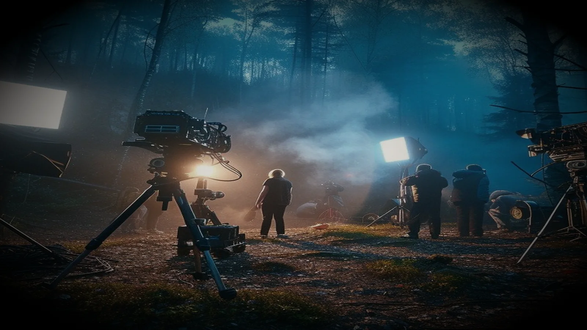
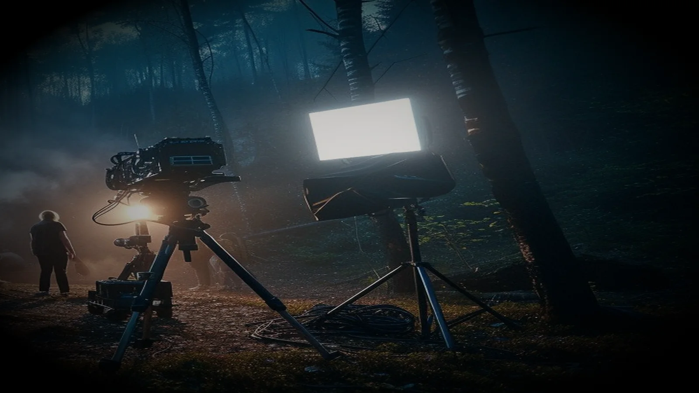

Search, software,
and the stories I frame.
I look for what hides between a query and a frame — and build the thing that finds it.
Cinema is the antidote to cold work.
Writing, directing, acting and criticism. The forest keeps getting cast.



I am a writer, a director and an actor — with a stage presence earned in front of live audiences, where a room either listens or it does not. The craft is grammar, pacing, blocking and subtext: which beat to cut, which silence to keep, where the light should fall. To make a film is to speak from a thousand stages: to give voice to our protests, to speak our dreams aloud, and to show the world we wish the way it deserves to be seen. My life itself is a cinema.
Two disciplines, one habit: look at the thing itself, not the dashboard that describes it.
Software without the subscription tax.
Products, extensions and experiments incubated under theblackit and shipped to real users.
Search is an engineering discipline.
Not keywords and vanity charts. Crawl budgets, render paths, and the machines that decide what exists at all.
Most sites don't have a content problem. They have a plumbing problem.
I lead technical search at Acodez IT Solutions, where the work is rarely about writing more pages. It is about whether the pages already written can be crawled, rendered, understood and trusted — and whether the team shipping them can see the difference in a number they care about.
That means reading server logs the way a doctor reads a chart, treating JavaScript hydration as a search-surface decision, and refusing to recommend anything that cannot be verified in production a month later.
A short record.
Where the hours have gone, and what they were for.
Tell me what you are making.
Whether it is a site that cannot be found, a story that wants to be a film, or a product that should not exist yet — there is a door for it.